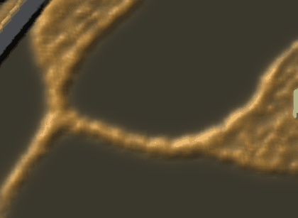
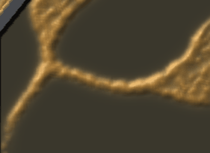

Everything that changed in the window since your last playtest (11-12), how to reach each change, a 15-minute route through it, and the questions only your hands can answer.
git pull on main, then cargo run --release --bin larder-world
Made 2026-11-14
cargo run --release --bin larder-world with no keys now opens the start menu over a live sandbox (shape C on the Fork). Its pages are Sandbox, Missions (the campaign list, 1-7), Options (map, own mould, rounds, bullet speed, panic, wither, shared food, gas loadouts), Keys, and Edit maps. A sandbox round from the menu plays the Fork map against shape C: about 25,000 walkers grown from home into a sheet with trunks. Every change below is on by default.
Any key on the command line skips the menu and starts the round straight away, for example cargo run --release --bin larder-world -- panic=0. Add menu=1 to open the menu with those keys preset, or menu=0 to never show it.
★ marks the changes you asked for yourself. Rows marked new landed since this page first went up.
| What changed | How to see it, or turn it off | PR |
|---|---|---|
| ★ New: a sharp slime and true hexagon crystals, with no blur or pixel steps (your playtest, 01:49Z) | Zoom in on any crystal | #230 |
| ★ New: bullets follow Noita: each bullet is a streak in its payload's colour and a light that moves over the real slime, and a burst lights its area for a tenth of a second. The simulation is unchanged | Zoom in and fire any round into the body | #219 |
| New: bombs. A bomb kills a small core and throws the live mould round it outward, as real walkers flying through the air that land and live on. One shot into C kills about 170 and throws about 680 | rounds=bomb, rounds=cluster, rounds=blowout, or H in play | #225 |
| New: soldiers you can count: elbow room between them, outlined figures, a health bar only when hurt, a dead pose; buildings and the larder show their state in the sprite | Zoom 6 on a squad | #227 |
| New: the slime's colours: a cut-off piece reads orange as it leans and red as it bolts | Cut a piece off (6:00 on the route) | #212 |
| ★ Shape C is the default slime, and it bites: each walker touching a soldier takes 2 health a second, out of 100, so ten walkers kill a soldier in 5 s | shape=a plays the old 5,000 walkers; shape=b|d|e the other films | #174 |
| ★ Soldiers wade: every walker on a soldier slows it, so walking into thick slime is slow and deadly | Walk straight in; wade=0 off | #143 #197 |
| Shots sink into the slime instead of stopping at its edge | sink=0 stops at the edge | #181 |
| A soldier aims only at slime it can see, not through walls | Stand behind a wall | #198 |
| C shares its food: its body swells round the crystals it holds | energy_flow=0 plays C as before | #183 |
| A part cut off from every crystal withers over a minute or two (your "double it" pick) | Wall a piece off with V; wither=0 off | #196 |
| A cut-off part panics: a slow lean, then a dash at the nearest soldier (or a fed crystal), giving up after half a second | panic=0 off; panic_creep=1 the old fast lean; panic_dash=0 never gives up | #200 #202–#204 |
| Bullets fly through the air (45 cells a second) instead of hitting at once | bullet=0 the instant ray | #191 |
| Rounds: pierce, split, blast and others | H cycles them in play; rounds=NAME starts with one; map=flats shows them best | #162 |
| ★ Craters: a cone-shaped hole under fire that refills in 2 s (your pick, 01:05Z) | crater=4.5 plays the old length | #143 #163 #218 |
| Your own mould: soldiers sow it and lay its road | own=1; Sow and Road on the card | #165 |
| Build anywhere: a soldier walks out to a far ghost, with a bar and the seconds left | Build page Q | #169 |
| The siren, a building that calls the mould with the alarm | Build page Q | #160 #161 |
| ★ Soldiers no longer need feeding (your playtest, 01:49Z). Food buys soldiers, walls and buildings, and the mould can still overrun an empty larder | ration=1 plays the old rations | #170 #220 |
| New: the start menu: sandbox, missions, options, keys, and Edit maps | cargo run --release --bin larder-world (no keys) | #207 |
New: the map editor. Paint plain, sand, clay, barren, rock and wet ground; place crystals, the mould's starts, your landing and walls; mirror; undo and redo. Enter saves to maps/NAME and starts the game on it, and the editor stays open for the next try | cargo run --release --bin larder-edit (blank), cargo run --release --bin larder-edit -- map=fork name=my-fork (edit a designed map; also nest, rim, flats, passes). Play a saved one with cargo run --release --bin larder-world -- map=maps/my-fork. Also "Edit maps" in the menu | #209 |
| Campaign missions 1-3, re-tuned after the changes above | Missions page in the menu, or mission=1-landfall, mission=2-first-contact, mission=3-the-gaps | #171 #175 #185 #187 |
| New: missions 4-7. 4 Cut the cord: the Trunk on the Fork, with rations on (the one mission that teaches feeding), shrink it to 0.2. 5 Kill zone: the Swarmer on the Flats, hold the three middle crystals clear for 60 s. 6 The nest: the Sleeper in its walled nest, shrink it by half. 7 Spore season: the Sporer on the Rim, bite halved, take more of the food than the mould does | Missions page, or mission=4-cut-the-cord, mission=5-kill-zone, mission=6-the-nest, mission=7-spore-season | #226 |
| The Drifter tier leaves home unprovoked; the core grows back | tier=drifter | #180 #163 |
| Sound: shots weigh their kills; the mould has a voice | O all sound, K the voice | 11-12 |
| New: more sounds. Bullets zip, the siren wails, blasts boom, and a cut-off piece tears, withers, snarls when it panics, and sounds when it rejoins | On by default; cut a piece off (6:00 on the route) to hear its set. O mutes | #217 |
| New: sleep gas works on the big GPU world, and the gas loadouts are in the menu | Options page in the menu | #211 |
cargo run --release --bin larder-world), take a look round its pages, then start a Sandbox round. Harvest the nearest crystal and buy soldiers as food allows.Look for: C's body thickening round the crystals it holds, and the sheet joining crystals with trunks.
Look for: the wading slowdown, the bite, shots sinking in, and the craters. Does walking in feel very deadly, as you asked?
Look for: the lean, the charge, and whether pulling back in time gets you clear. Does it read as a scared animal? An arm that still holds a fed crystal won't wither, because it's still eating. If you can't find an unfed arm, the two films below show a full cut.
rounds=bomb and fire into the thickest part.Look for: which rounds you can tell apart by eye, whether the bullets and their light now look good, and the bomb throwing the mould.
tier=grudge. Fire from one spot for 30 s, then move.Look for: the Grudge's long-lasting alarm and scars, which make it come back to where it was hurt, and whether moving shakes it off.
own=1. Sow a patch and lay a road toward the enemy.Look for: whether your mould feels like yours and does something you can see.
larder-edit and press Enter to play what you drew, or replay 6:00 once with panic=0 and once with wither=0.Headless runs on the cloud's software GPU (seed 1, Fork, farm hand). The camera is held still on the cut. Each film plays faster than the game: wither at 8 times, last stand at 2 times.

cut=150,386,239,22). The piece has no news of food, holds for about 10 s, then thins steadily.
cut=150,365,240,32 cutsquad=365,264,150,4). The piece leans, then charges the soldiers and burns itself out on them.Answer any of these in the project chat by number. A one-word answer is enough.
own=1). Keep going this way, or rethink?Crater length is settled (your pick, 01:05Z: 2 s) and is in this build. None of these picks blocks other work; they feed the next round of tuning.